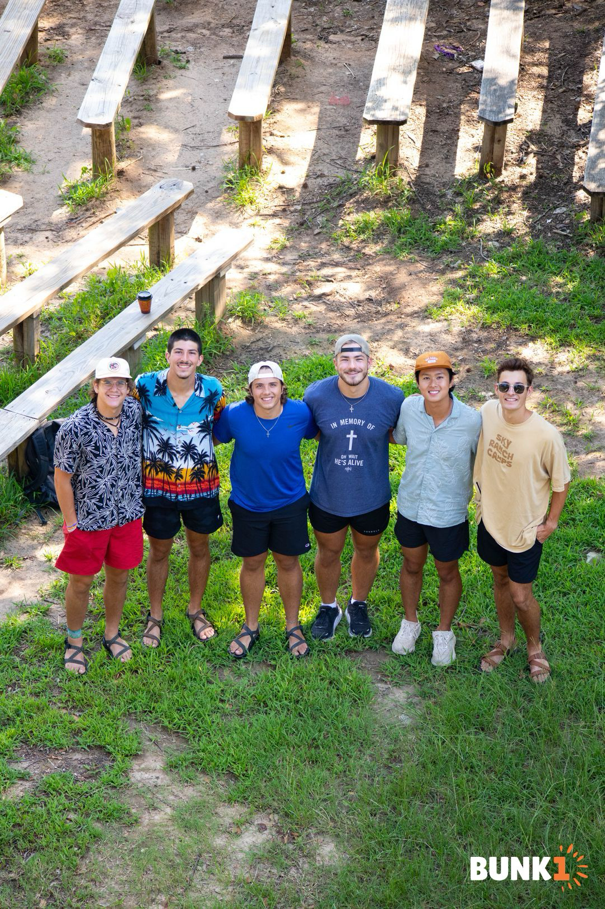
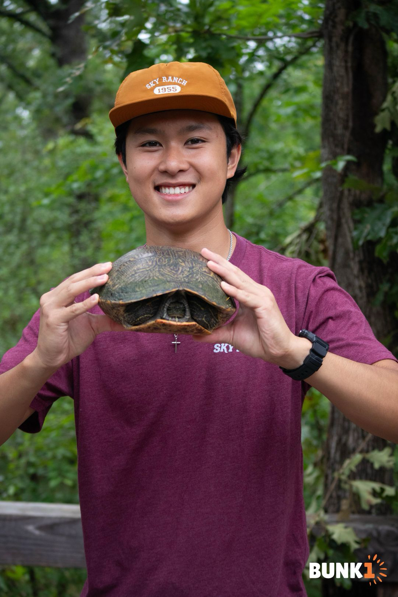
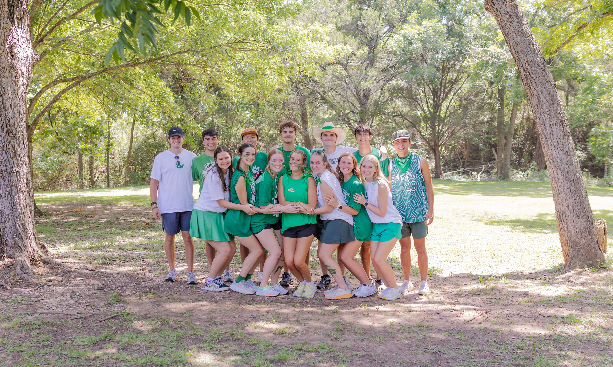

Sky Ranch Counselors
Over the summer, I had the amazing opportunity to work as a counselor at Sky Ranch. It was a rewarding experience working with kids and being part of an incredible team.
Wind Symphony in Spain

I also had the privilege to perform with the wind symphony in Spain. It was an unforgettable experience playing music in such beautiful and historic locations.
Sky Ranch Adventures
While at Sky Ranch, I also had the chance to explore nature and encounter wildlife, like this turtle!
Impact Retreat
During the summer, I was also involved in Impact Retreat, where we helped incoming freshmen get acclimated and excited for the upcoming school year at Texas A&M.
Impact Retreat - Group Photo

This is a group photo of all the amazing people I got to work with at Impact Retreat. It was a blast!